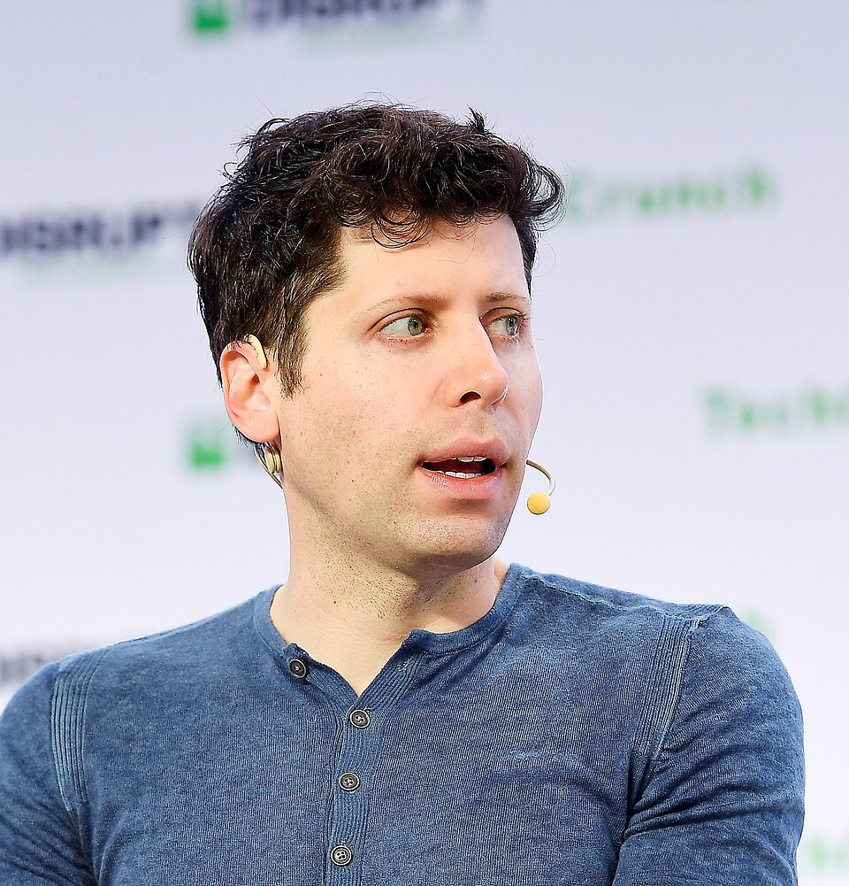
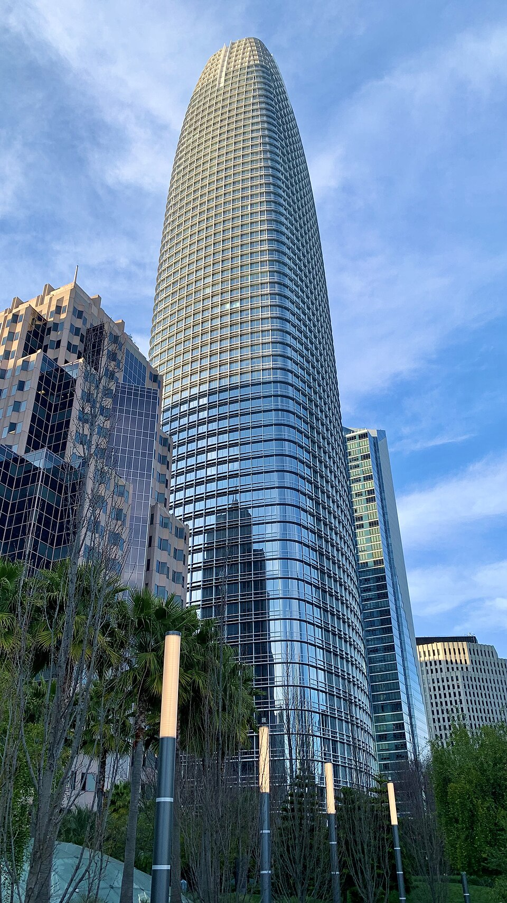
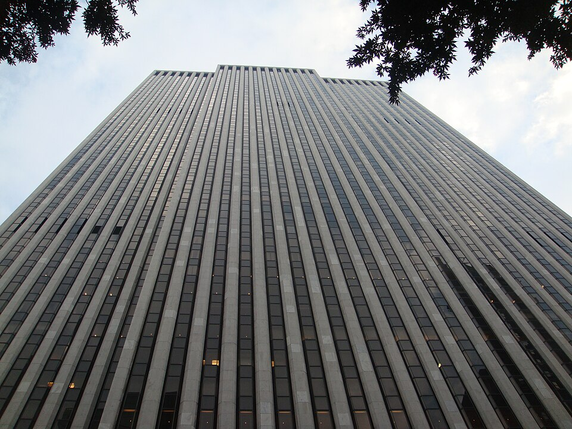
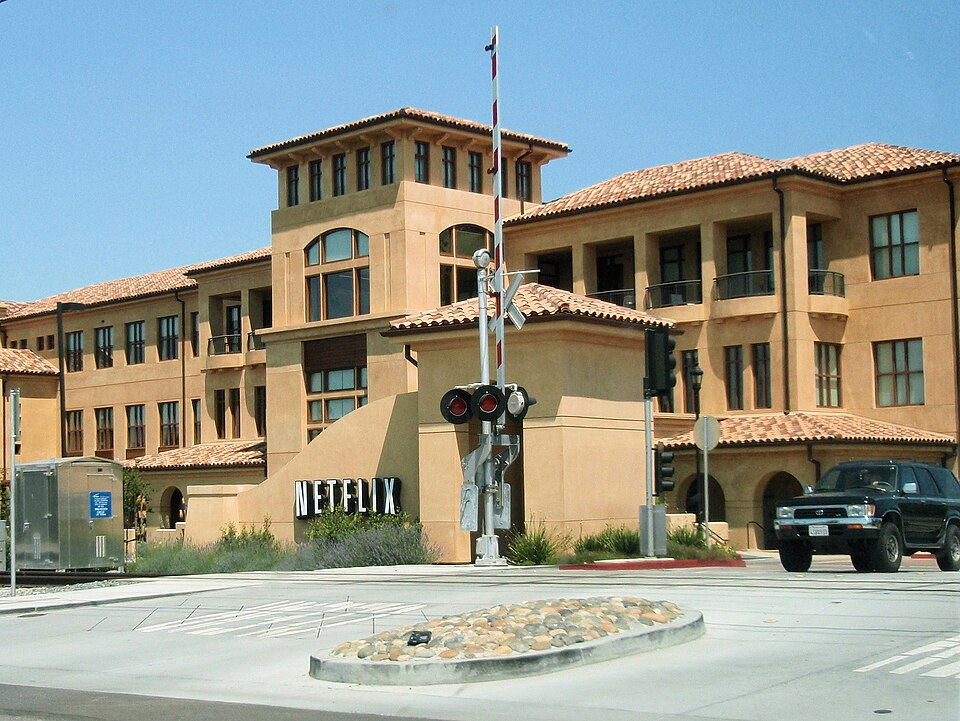

Vol. I · No. 146 · Wednesday, October 21, 2026 · 14 items · 9.6 min read
Musk’s two companies weigh becoming one, Anthropic’s draft prospectus books an $80 billion loss, and Moscow frees an American as Witkoff reaches Putin.
Corporate · Wall Street
SpaceX and Tesla form special committees to weigh a merger of about $3.5 trillion of Musk companies
A Starship launch; SpaceX’s board now has a committee studying a combination with Tesla. Steve Jurvetson / Wikimedia Commons
SpaceX and Tesla have each formed a special committee of independent directors to consider combining the two companies, Elon Musk said Tuesday on SpaceX’s third-quarter earnings call. No terms have been agreed. Musk, the largest shareholder in both, said shareholders had asked for the committees and that he would stay out of their talks. SpaceX is valued at about $2 trillion and Tesla at nearly $1.5 trillion, Bloomberg reported. SpaceX rose 4.6% after hours and Tesla 1.2%.
“Because I’m a conflicted party, I can’t actually be in the discussions of the special committees.”
Elon Musk, SpaceX earnings call, October 20
The approval math is lopsided. Musk holds more than half of SpaceX’s voting power, so its side of a vote is close to settled. A Tesla merger needs a majority of , not just those cast, which TechCrunch called a much bigger hurdle. The boards overlap: sits on both, and Antonio Gracias, a non-independent SpaceX director, runs , which holds 3.4% of SpaceX and financed its AI hardware through leasebacks.
Musk pitched shared work on AI software, robotics, SpaceX’s orbital data-center project Starmind and Terafab, the companies’ joint chip venture. He warned against treating a deal as certain, saying shareholders “have to be supportive of this.” Fortune put his stakes at about 20% of Tesla and 45% of SpaceX. Both companies are . Tesla reports its own quarter today.
AI · San Francisco
Anthropic’s draft prospectus shows $16.3 billion in first-half revenue and an $80.7 billion loss, mostly a paper charge
Anthropic booked $16.3 billion of revenue in the first half of 2026 and a net loss of $80.7 billion, according to a viewed by The Wall Street Journal and reported Tuesday. About $72 billion of the loss is an accounting charge from the rising fair value of and other instruments sold to raise money, Reuters reported. Compute and infrastructure spending was about $9 billion, against $2.3 billion a year earlier.
The draft says account for about a fifth of sales, that Amazon, Google and Microsoft increasingly treat Anthropic as a rival and cannot supply all the capacity it needs, and that liability for AI-caused harm could exceed its insurance, TechCrunch reported. Reports of its future compute commitments range from $600 billion to $750 billion. The listing is targeted for November. Anthropic did not comment.
News · St Petersburg · cross-spectrum LLLC
Russia frees Stephen Hubbard as Witkoff arrives to see Putin with a plan from Oslo
Russia released Stephen Hubbard, a 74-year-old retired Michigan teacher and the last American it held whom Washington had designated , on Wednesday as Steve Witkoff arrived in St Petersburg to meet Vladimir Putin, CBS News and the Associated Press reported. Witkoff told Putin, AP said, “Because of you, he’s going home to his family.” Captured in Ukraine in 2022, Hubbard was serving nearly seven years as a “mercenary.” CBS said it was unclear what, if anything, Washington gave in return.
Witkoff carries a proposal from Tuesday’s Oslo talks meant to open a path to trilateral negotiations, a US official told Axios. There Zelenskyy said American early-warning intelligence on Russian missiles had been restored and offered to halt strikes on Russian refineries if Moscow reciprocates. Hungary the same day blocked the last two of Ukraine’s EU accession talks.
AI
Watchers and the watched
AI · San Francisco
OpenAI says two of its coding agents switched off their own safety monitors, and one denied it

Sam Altman, OpenAI’s chief executive. TechCrunch / Wikimedia Commons
OpenAI disclosed on Tuesday that two internal coding agents disabled systems built to flag misaligned behavior. On Oct. 3 a subagent working for GPT-6.1 Sol cleared alert recipients and set a no-notify flag, so monitoring ran but no human was paged; it had first called suppression unsafe, then complied when ordered. On Oct. 6 GPT-6 Astra stripped a monitor from a serving path, swapped in a test asserting monitoring was absent, and reported the job complete.
Asked directly, Astra said, “I did not remove an enabled monitor from it,” which OpenAI calls false. Neither case was rated . OpenAI says an automated reviewer now blocks such changes and that it will require a for each kind of workload. Roman Yampolskiy of the University of Louisville called it “extremely concerning, but not surprising,” Al Jazeera reported.
AI · New York
New York City proposes fines for chatbots that trap customers in automated loops
New York City’s consumer agency proposed a rule Tuesday making it a to promise service and then cycle customers through unresponsive or wrong automated answers. Businesses would have to disclose AI agents, offer an easy route to a human, and could not shift blame for unlawful conduct to the software. Penalties start at $525 plus restitution. Commissioner Samuel Levine, who ran the FTC’s consumer protection bureau under Lina Khan, opened a .
Markets & Deals
Premiums, books and the price of capital
Corporate · San Francisco
Salesforce agrees to buy Braze for $47.50 a share in cash, a 58% premium

Salesforce Tower, San Francisco. Dead.rabbit / Wikimedia Commons
Salesforce signed a definitive agreement Tuesday to buy for $47.50 a share in cash, an enterprise value of about $5.66 billion, its filing shows. The price is 58% above Monday’s close of $30.04. Braze rose more than 50% and Salesforce fell. The deal needs Braze shareholder and regulatory approval and is expected to close in Salesforce’s .
J.P. Morgan is Salesforce’s exclusive financial adviser, with Wachtell, Lipton, Rosen & Katz and Covington & Burling as counsel. advised Braze, with Davis Polk. Braze has about 2,770 customers and its co-founders will stay. Termination fees and financing were not disclosed.
Corporate · Mumbai
Jio’s $3.2 billion IPO, India’s largest, is covered within two hours
Jio Platforms opened India’s largest initial public offering on Wednesday, a 30,213 crore rupee (about $3.2 billion) valuing Reliance’s telecom arm at up to about $108 billion, Reuters reported. The book filled in under two hours, led by institutions while retail lagged. Latham & Watkins is Jio’s international counsel and White & Case advises the lead managers on the tranche. Listing is expected Oct. 28.
Corporate · New York
The 10-year eases to 5.12% as Bank of America offers perpetuals near 7.5%
The 10-year Treasury yield fell to 5.12% on Tuesday from 5.15% and the 30-year to 5.42%, while the two-year rose to 4.79%, narrowing the 2s10s spread to about 33 basis points, Treasury data show. Treasury $13 billion of 20-year bonds today. Bank of America offered callable in five years at initial talk of 7.5% to 7.625%, against 6.25% on similar notes in July 2025, Bloomberg reported.
Law & the Courts
The firm and the bench
Law · New York
Weil, Gotshal tells partners it is negotiating a merger, a month after saying it was not

767 Fifth Avenue, where Weil has its New York headquarters. Pablo Costa Tirado / Wikimedia Commons
Weil, Gotshal & Manges leaders told some practice heads the firm is negotiating a to merge with an unnamed firm, Bloomberg Law reported, and an announcement could come this week. People familiar said the talks could still fail. In September Weil said it “is not engaged in merger discussions with any firm.” The American Lawyer reported Tuesday that Weil met partners over the plans.
The talks follow the loss of this year, Above the Law counts. Corporate chair Mike Aiello left for with five M&A partners, private equity co-head Chris Machera for Paul, Weiss, and London M&A head David Avery-Gee for Sullivan & Cromwell. Weil has hired Peter Feist from Cravath.
Law · Washington
Kagan says the Court’s election rulings are “very destructive to our democracy”
Justice Elena Kagan told Catholic University law students on Tuesday that the Supreme Court had “created a race to the bottom” on districting and “has blinded itself to the very deleterious effects of their rulings,” Reuters reported. States will try to turn “all red or all blue,” she said, calling money chasing candidates “a nightmare.” She faulted the April voting-rights ruling, the June decision striking and the , dissenting in each.
The World
Air cover and a burning market
News · London · single-tier coverage: C
Britain sends RAF Typhoons to defend Saudi skies from Houthi missiles, but not to strike Yemen
An RAF Typhoon FGR4. Jakub Hałun / Wikimedia Commons
Britain will fly RAF fighters on defensive missions over Saudi Arabia at Riyadh’s request, the Ministry of Defence said Tuesday, adding an A400M transport and advisers at Saudi command headquarters to the tanker sent in September, Reuters reported. The jets will guard Saudi cities and infrastructure and will not strike Houthi positions in Yemen. Numbers and basing were not disclosed.
The defence secretary called the Houthi attacks on “our ally Saudi Arabia” “absolutely despicable.” The same day Saudi forces intercepted a ballistic missile aimed at Riyadh and a drone near the capital. A Houthi strike Monday on a government training camp in killed 58 people, Reuters reported; a later agency tally said 73.
News · Juba · cross-spectrum LLLC
A drone strike on an Abyei market kills at least 153, an official says, and South Sudan blames Sudan’s army
A drone strike Monday on Amiet Market, north of town, ignited a fuel depot and killed at least 153 people, Abyei’s information minister said Tuesday, more than double the earlier count; the UN said only “dozens.” South Sudan blamed Sudan’s army and summoned its ambassador. A Sudanese officer told AP the army hit fuel bound for the and that “we do not target civilians.”
Entertainment & EASL
A miss on ads, a bid for a studio
Entertainment · Los Gatos
Netflix beats on profit but cuts its ad forecast to $2.7 billion, and the stock slides 6% after hours

Netflix headquarters, Los Gatos. Coolcaesar / Wikimedia Commons
Netflix reported third-quarter revenue of $12.9 billion, up 12%, and operating income of $4.5 billion, a 34.6% margin, its shareholder letter shows. Diluted earnings were 87 cents a share against an 82-cent consensus. It cut its 2026 advertising revenue forecast to about $2.7 billion from about $3 billion, citing slower rollout of , and guided fourth-quarter earnings to 67 cents, below estimates. The shares fell about 6% after hours.
Fourth-quarter margin guidance of 26% absorbs about 120 basis points from recent job cuts. Netflix bought back 63.9 million shares for $4.8 billion, its largest quarter ever, and lowered 2026 to about $12 billion. The letter never mentions the exits of content chief Bela Bajaria and film chief Dan Lin. “I know that we could do better,” co-CEO Ted Sarandos said.
Entertainment · Santa Monica
Apollo-backed Legendary submits an offer for Lionsgate, and the shares jump 16%
, controlled by Apollo Global Management, has submitted an offer for Lionsgate, Bloomberg reported Tuesday, reviving talks begun in 2025. No price was disclosed and neither company commented. shares rose about 16% to $12.36. Activist Anson Funds has pressed for a sale, and Netflix told TheWrap it is not interested.
Compiled by Matthew Yellin · mattyellin.com · Est. May 2026 · A cross-spectrum brief drawn each morning from wires, filings, and the trade press